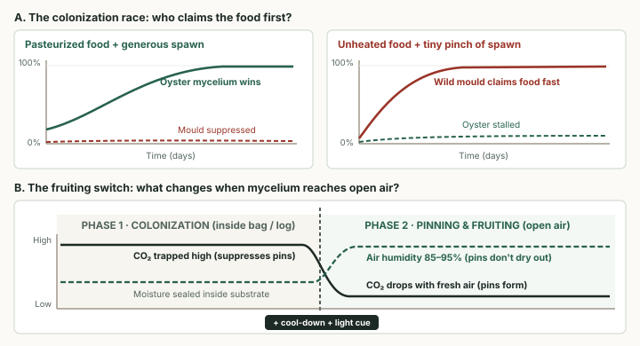

Putting spawn onto wet food sounds simple—until green mould eats it first, or the mycelium grows forever without fruiting. Two rules run the whole show: win the territory, then sense the open air.
Warm-up from lesson 3
1. Colonization is a turf war
Wet wheat straw (paglia di grano) or sawdust (segatura) is an open buffet—not just for your mushroom mycelium, but for airborne mould spores and bacteria that grow much faster from scratch.
Knock back rivalsheat-treat substrate
Add spawngive mycelium a head start
Colonizeclaim all the food
Shift cuesair + humidity → pin
Physical head start. In nature, a fungus fights for space on a fallen branch; in cultivation, growers tilt the odds by pasteurizing (mild heat to knock back moulds and pests) or sterilizing (wiping everything out) before mixing in a generous dose of spawn. Once the mushroom mycelium claims the surface of every shred, newcomers have nowhere to land. Wikipedia: Fungiculture
Chemical defence. Fungi also wage chemical warfare. They make secondary metabolites—molecules built not for basic growth, but to defend territory. Antibiotics like penicillin are fungal weapons evolved to kill or slow bacteria competing for the same rotting food. OpenStax §24.5
2. Why mycelium waits to fruit
While mycelium is happily buried inside a log or a filter bag, it stays in feeding mode—often in high carbon dioxide (CO₂) from its own respiration. Making a mushroom inside a sealed log would be pointless: spores need open air to scatter.
Once the food is claimed, the mycelium waits for pinning(formazione dei primordi)—tying hyphae into tiny knots called primordia that swell with water into mushrooms. Three outdoor signals flip that switch: Cornell Small Farms
Fresh air (CO₂ drops): Breaking out to the surface swaps trapped CO₂ for fresh oxygen. Too much CO₂ leaves mushrooms leggy with tiny caps—essentially suffocating.
High humidity & surface evaporation: Tiny primordia have huge surface area and dry out fast, so the air must stay wet (around 85–95% humidity) while gentle evaporation at the surface signals open space.
Temperature drop & light: Many species pin after a mild cool-down plus indirect light—not as energy, since fungi don't photosynthesize, but as a compass pointing toward open air.
From mycelium to mushroom: pinning is the physical transition—tight hyphal knots swell with water into tiny primordia, which only turn into wide caps if CO₂ stays low and humidity stays high.

Two graphs to remember:A shows why pasteurization + spawn wins the colonization race before mould takes off. B shows the environmental flip—CO₂ drops with fresh air while humidity stays high—that triggers pinning. Real photos on Wikimedia Commons: Oyster mycelium colonizing straw · Oyster mushroom pins (primordia)
Quick check
Did the big idea land? Pick the best answer.
Think it through
Now apply it. Diagnose what went wrong in each situation.
Puzzle to chew on
If you slice open a grow bag too early—when the mycelium has only colonized half the sawdust—two things tend to go wrong at once. Using both halves of this lesson, what are they? Think first, then open.
One explanation
First, competition: the bare half is still undefended food, and opening the bag invites airborne mould spores straight onto substrate the mycelium hasn't claimed yet.
Second, premature signals: fresh air tells the mycelium to stop eating and build mushrooms before it has banked enough food to support a proper crop. Colonize first, fruit second.